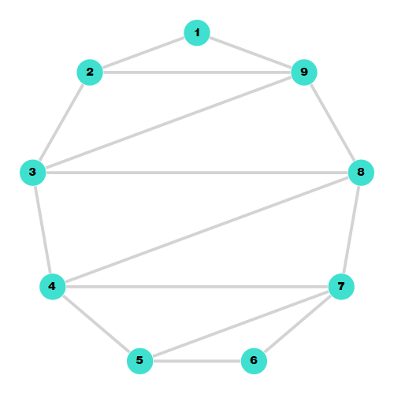

Triangulations of Convex Polygons
In order to better understand triangulations, flips and flip graphs, it can be helpful to start simple. If you take any number of points and iteratively connect them with straight edges that do not cross each other until you can no longer add an edge that does not cross any other edge, what you'll get is a (geometric) triangulation.
To get from one triangulation of a set of points to another, you may choose an inner edge and flip it. If you look at any inner edge, the two triangles adjacent to it form a quadrilateral, with the edge as one of its diagonals. To flip an edge, all we have to do is replace it with the other diagonal. As we don't want to have straight edges that cross each other, a flip can only be done if the quadrilateral is convex and no three of its corners lie on the same line. As we are interested in taking this theory to closed surfaces, where we will no longer have the restriction of edges being straight, we will only consider triangulations of points in convex general position. In this case, a triangulation in the geometric sense is equivalent to a triangulation of points on the border of a disc.
We do not care where exactly the points are located; however, in order to keep in line with the geometric sense and have a simple visualization, we will consider these points to be the vertices of a convex polygon (i.e. points in convex position).
Structures
FlipGraphs.TriangulatedPolygon — Typestruct TriangulatedPolygon <: AbstractGraph{Int32}A structure representing a triangulation of a convex polygon.
TriangulatedPolygon implements the AbstractGraph interface from Graphs.jl. It is therefore possible to use it with other packages that work with Graphs.jl. This is very helpful for plotting the graph.\
Vertices are not explicitly stored in TriangulatedPolygon. Only the total number of vertices is stored. They are implicitly labeled by the integers from 1 up to the total number of vertices.
Edges are stored as an adjacency list of which vertices are connected to another.
Constructors
FlipGraphs.triangulated_polygon — Functiontriangulated_polygon(n::Integer) :: TriangulatedPolygonCreate a triangulated convex n-gon.
Vertices are named from 1 to n in an anticlockwise manner. The inside is triangulated in a zig-zag pattern.
As an example, the output of triangulated_polygon(9) would be a graph that corresponds to the following triangulation of a 9-gon:


Graph Methods
Graphs.nv — Methodnv(g::TriangulatedPolygon) :: IntReturn the number of vertices/points in g.
Graphs.ne — Methodne(g::TriangulatedPolygon) :: IntReturn the number of edges in g.
Graphs.vertices — Methodvertices(g::TriangulatedPolygon) :: Vector{Int}Return a list of all the vertices in g.
Graphs.edges — Methodedges(g::TriangulatedPolygon) :: Vector{SimpleEdge{Int32}}Compute and return a list of all the edges in g.
Edges are not directed. It is, however, necessary for computations to define a source and a target. For TriangulatedPolygon, the source will be the incident vertex with the smaller id.
Graphs.has_vertex — Methodhas_vertex(g::TriangulatedPolygon, v::Integer)Return true if v is a vertex in g.
Graphs.has_edge — Methodhas_edge(g::TriangulatedPolygon, e::Edge)Graphs.has_edge — Methodhas_edge(g::TriangulatedPolygon, s::Integer, d::Integer)Return true if g has an edge going from vertex s to vertex d.
Graphs.neighbors — Methodneighbors(g::TriangulatedPolygon, v::Integer) :: Vector{Int32}Return the list of all the vertices in g that are adjacent to v.
FlipGraphs.degrees — Methoddegrees(g::TriangulatedPolygon) -> Vector{Int}Return a list of the degrees of every single vertex in g.
FlipGraphs.is_isomorphic — Methodis_isomorphic(g1::FGPVertex, g2::TriangulatedPolygon, permutations::Vector{Vector{T}}) where T<:IntegerCheck if g2 is isomorphic to g1 up to a relabeling of the vertices by one of the permutations.
FlipGraphs.rename_vertices — Methodrename_vertices(g::TriangulatedPolygon, p::Vector{<:Integer})Rename the vertices of g by applying the permutation p.
FlipGraphs.adjacency_matrix — Methodadjacency_matrix(g::TriangulatedPolygon) :: Matrix{Int32}Compute the adjacency matrix for the triangulated graph g.
Flipping
FlipGraphs.is_flippable — Methodis_flippable(g::TriangulatedPolygon, src::Integer, dst::Integer) :: BoolReturn whether or not the edge can be flipped.
Note that for a triangulation of a convex polygon, the inner edges are always flippable, while the outer edges cannot be flipped.
FlipGraphs.is_flippable — Methodis_flippable(g::TriangulatedPolygon, e::Edge) ::BoolFlipGraphs.flip! — Methodflip!(g::TriangulatedPolygon, src::Integer, dst::Integer) :: TriangulatedPolygonFlip the the edge incident to src and dst in g.
FlipGraphs.flip! — Methodflip!(g::TriangulatedPolygon, e::Edge) :: TriangulatedPolygonFlip e in g.
FlipGraphs.flip — Methodflip(g::TriangulatedPolygon, e::Edge) :: TriangulatedPolygonReturn the triangulated polygon obtained by flipping the edge e in g.